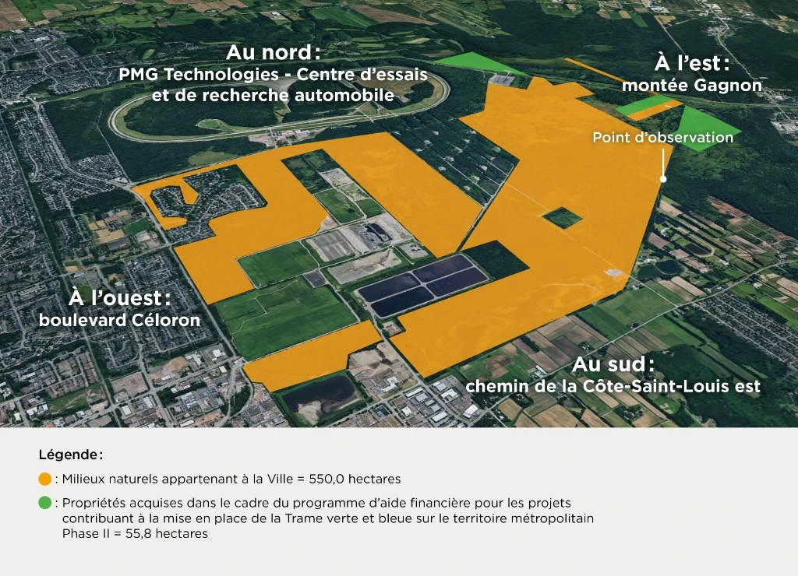
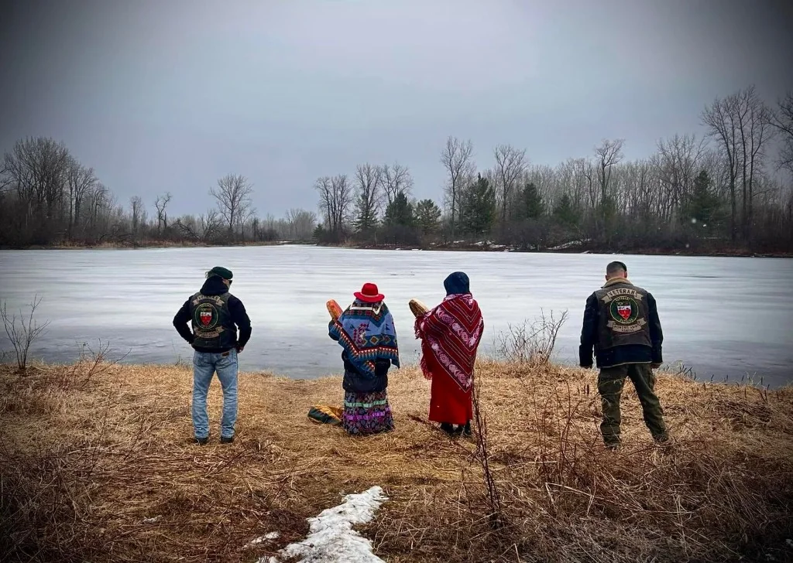
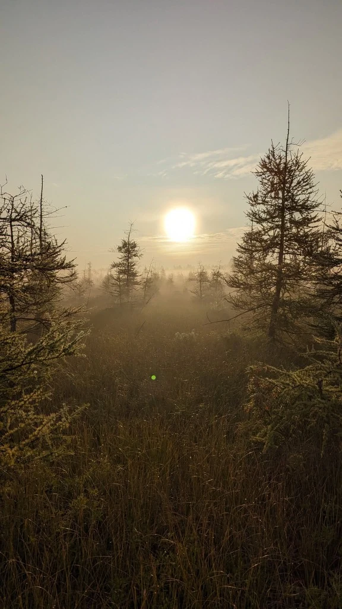
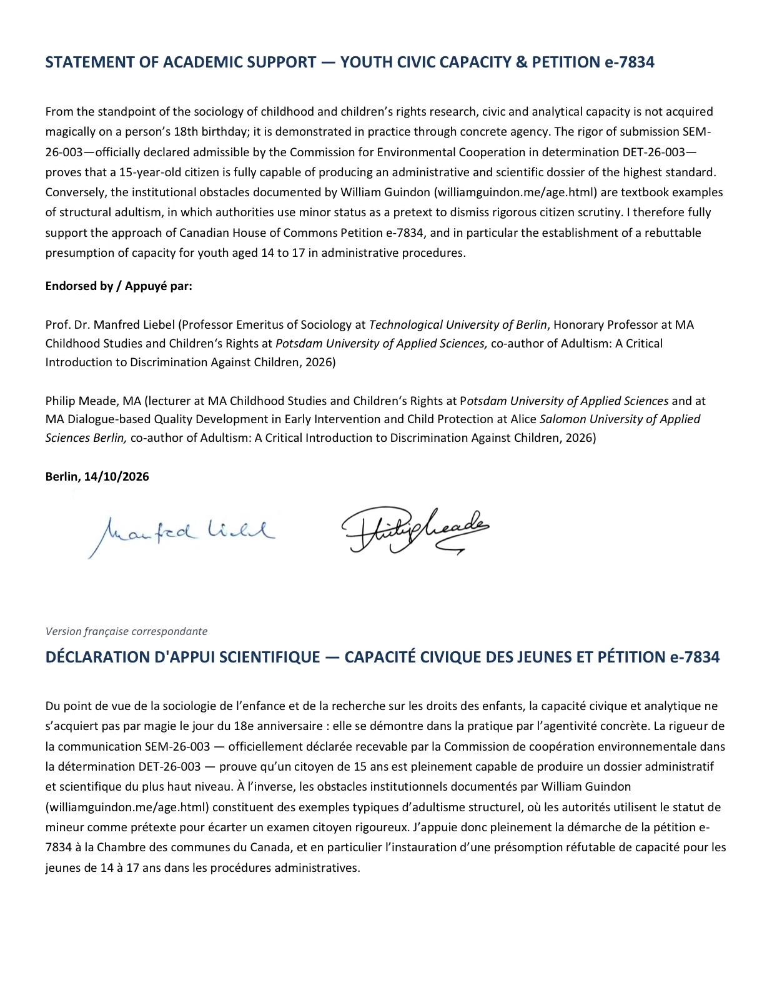

Portrait Officiel
Règles de Propriété Intellectuelle & Identité Visuelle
Politique de Licence, Charte Graphique & Inventaire des Photos
Cadre légal de mise à disposition sous licence Creative Commons CC BY-NC-ND 4.0, guide officiel d'utilisation de la marque, palettes de couleurs et catalogue d'intégrité de toutes les photographies publiées sur williamguindon.me.
Principe Fondamental : Règle de Licence par Défaut
Sauf mention contraire expresse (notamment pour les pièces officielles du domaine public émanant de la CCE, du BAPE ou de ministères, ainsi que pour les bibliothèques logicielles tierces), l'intégralité des contenus originaux créés par William Guindon — textes, chronologies, analyses, code source original, logos, infographies et photographies de terrain — est mise à disposition sous les termes de la licence internationale Creative Commons Attribution - Pas d’Utilisation Commerciale - Pas de Modification 4.0 International (CC BY-NC-ND 4.0).
1. Cadre Juridique et Licence CC BY-NC-ND 4.0
La présente politique régit les droits de reproduction, de diffusion et de citation pour toute personne physique ou morale, média d'information, chercheur académique ou système automatisé.
1.1. Conditions d'Application Cumulatives
- Attribution Obligatoire (BY) : Tout emprunt, citation, reprise visuelle ou partage doit impérativement citer clairement la source : « William Guindon (williamguindon.me — Dossier SEM-26-003) » avec un lien direct vers l'URL d'origine.
- Usage Strictement Non Commercial (NC) : Aucune exploitation commerciale, publication payante, monétisation publicitaire directe ou revente des contenus originaux de William Guindon n'est permise sans entente écrite préalable.
- Absence de Modification et d'Œuvres Dérivées (ND) : Il est strictement interdit d'altérer, de tronquer, de retoucher ou de déformer les textes, photographies probatoires ou documents d'enquête de manière à altérer leur portée factuelle ou scientifique.
1.2. Exceptions d'Intérêt Public et Fair Dealing
Conformément à la Loi sur le droit d'auteur du Canada (L.R.C. (1985), ch. C-42, art. 29 à 29.2), les présentes dispositions ne restreignent en rien les exceptions d'utilisation équitable (fair dealing) accordées pour l'étude privée, la recherche académique, la critique, le compte rendu journalistique ou la communication de procédures quasi judiciaires internationales devant la Commission de coopération environnementale (CCE / ACEUM).
1.3. Exclusion des Logiciels et Bibliothèques Tiers
Cette licence CC BY-NC-ND 4.0 ne s'applique PAS aux logiciels, dépendances et bibliothèques tierces intégrés au dépôt (ex. PDF.js sous Apache-2.0, EmbedPDF sous MIT, Viewer.js sous MIT, GrapesJS sous BSD-3-Clause, Curtains.js sous MIT, nostr-tools sous Unlicense, etc.). L'inventaire détaillé de ces licences est accessible sur la page Crédits, Licences & Dépendances Tierces et dans le fichier THIRD-PARTY-NOTICES.md.
1.4. Liens Hypertextes et URL Externes
L’utilisateur reconnaît que toute consultation d’une URL externe référencée sur ce site s’effectue à ses risques et périls exclusifs.
L'auteur de ce site ne saurait être tenu responsable du contenu, des modifications, des politiques de confidentialité ou de tout préjudice direct ou indirect résultant de l’accès ou de l’utilisation de ces URL externes. La présence d’une URL externe n’implique aucune validation, affiliation ou approbation des services ou propos qui y sont publiés.
2. Charte Graphique Officielle
L'identité visuelle de williamguindon.me reflète l'équilibre entre la rigueur institutionnelle du dossier juridique international SEM-26-003 et la préservation vivante de la biodiversité tourbeuse de Blainville.
2.1. Palette de Couleurs Système
Émeraude Végétal (Accent Principal)
#22c55e · rgb(34, 197, 94)
Couleur d'accentuation principale du monogramme WG, liens actifs, boutons d'action et états de succès.
Vert Forêt Profond (Brand Primary)
#064e3b · rgb(6, 78, 59)
En-têtes institutionnels, badges de certification, fonds de panneaux probatoires et contrastes élevés.
Menthe / Jade Lumineux
#10b981 · rgb(16, 185, 129)
Surbrillance, mode sombre, accents de traduction et repères cartographiques.
Terre & Tourbe (Earth Accent)
#a85507 · rgb(168, 85, 7)
Éléments de sol, alertes critiques, historique BAPE et données de sédiments tourbeux.
Noir Tourbière Nocturne (Dark Base)
#0b0f0c · rgb(11, 15, 12)
Arrière-plan officiel du mode sombre et encre profonde de la typographie monogramme.
Blanc Brumeux (Light Base)
#f7f9f7 · rgb(247, 249, 247)
Arrière-plan officiel du mode clair offrant une lecture confortable sans éblouissement.
2.2. Typographie
- Titres et Lignes de force : Police système native haute fidélité (
system-ui, -apple-system, BlinkMacSystemFont, "Segoe UI", Roboto) assurant une rapidité de chargement absolue (0 Ko de latence réseau). - Code et Empreintes Cryptographiques : Police à chasse fixe (
ui-monospace, SFMono-Regular, Menlo, Monaco, Consolas, monospace) pour l'affichage inaltérable des hachages SHA-256 et des signatures PGP/Nostr.
3. Logos et Monogrammes Officiels (Téléchargement & Formats)
Le monogramme « WG » entrelacé symbolise l'intersection entre l'enquête citoyenne et la défense de la nature (barre d'accent émeraude).
Recommandations Techniques de Formats :
• SVG (Vectoriel) : Format recommandé par excellence pour le Web et la presse papier (netteté infinie, poids ultra-léger < 3 Ko).
• WebP : Format matriciel optimisé de référence pour les applications modernes et les prévisualisations (70% plus compact que le PNG avec transparence alpha intégrale).
• JPEG XL (.jxl) : Format nouvelle génération de haute fidélité d'archivage. Note : JPEG XL n'est pas encore activé par défaut dans tous les navigateurs commerciaux, mais demeure disponible sur demande pour les archives graphiques.


Monogramme Inversé (Fond sombre)
W blanc avec accent émeraude (#22c55e) pour fond sombre.
4. Inventaire des Photographies et Médias Officiels
Toutes les photographies de terrain, portraits et relevés visuels figurant sur williamguindon.me sont répertoriés ci-dessous avec leurs dimensions, crédits et conditions de réutilisation journalistique.
 Écosystème
Écosystème

CartographieCarte des Milieux Naturels (550 ha)
 Terrain
Terrain

Histoire & Territoire
Biodiversité Preuve CCE
Preuve CCE

Soutien ScientifiqueDemandes d'Utilisation Média Spécifiques
Pour les salles de rédaction, productions audiovisuelles, documentaristes ou réutilisations hors cadre CC BY-NC-ND 4.0 :
Courriel officiel : contact@williamguindon.me
Kit Média & Dossier Journalistes : Consulter l'Espace Presse ↗ · Explorateur documentaire des 222 pièces ↗
Document officiel · Charte de Propriété Intellectuelle & Identité Visuelle · williamguindon.me